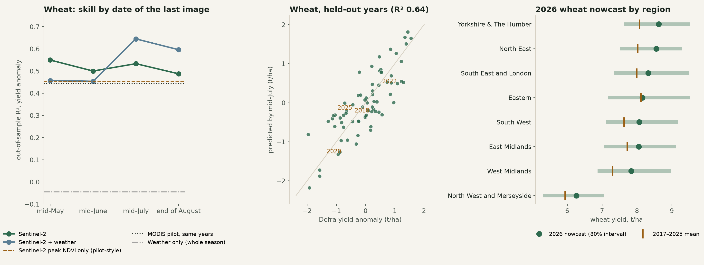
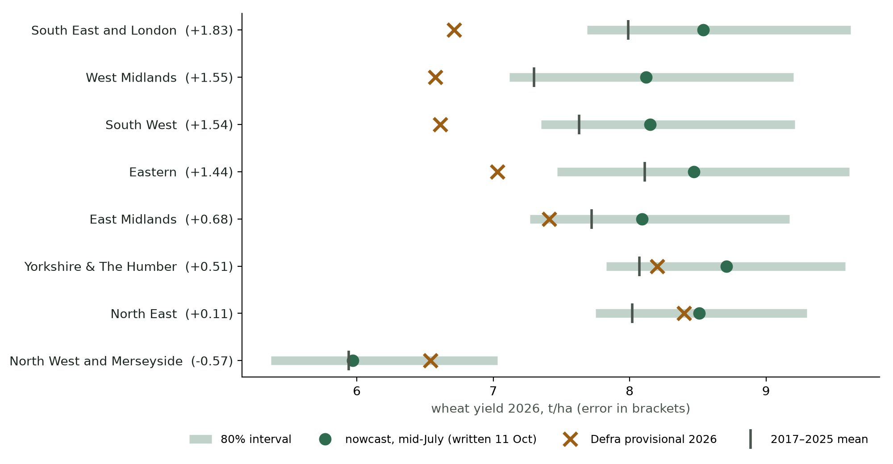

Abstract. We nowcast regional cereal yields in England from field-level Sentinel-2 observations, aggregating 381,400 cereal fields to the eight regions for which Defra publishes yields, under an evaluation protocol fixed before any yield was compared. Tested on seasons the model never saw (2017–2025), Sentinel-2 with ERA5-Land weather explains 64% of the year-to-year variation in regional wheat yields by mid-July (England 78%), against 44% for MODIS over the same seasons; 55% is already available by mid-May; weather alone has no skill. Barley reaches 52–58% with crop-specific additions. Prediction intervals hold their nominal coverage (79–81% for 80% intervals). A nowcast for 2026, written without looking at Defra's provisional figures, was too high for every crop (wheat by 0.89 t/ha averaged over regions) and only half the regions fell inside their intervals. A post hoc diagnosis traces most of the miss to one mechanism: a positive weight on hot days, learned from 2017–2025 summers in which heat happened to coincide with decent yields, extrapolated to a heatwave four to five standard deviations outside the training range. Protocol addenda written before each test show that constraining weather to damaging effects helps spring barley, radar helps winter barley at mid-July, and neither a 25-year MODIS record nor geospatial embeddings help at regional scale; an apparent gain from scheme uptake was a coincidence of timing and was rejected. Nine seasons are too few to learn how crops respond to weather outside their range; the 2027 harvest is the first fair test of the fixes. In Scotland and Northern Ireland, wheat transfers weakly from England (R² 0.22) and barley could not be mapped reliably; a blind 2026 nowcast for both nations awaits their December figures.
Official regional crop statistics arrive months after harvest. A forecast of regional yield by mid-July, a month before harvest, would serve food-supply planning, commodity markets and farm lenders. Satellites see crop condition on every field throughout the season; the question is how much of the year-to-year swing in regional yield that condition explains, how early, with what honest uncertainty, and what happens in a year unlike the training years. [Position against crop-yield forecasting from remote sensing, learning from aggregate labels, and out-of-distribution failure of yield models under climate extremes: to be written.]
Contributions: (i) a field-to-region nowcast evaluated only on held-out seasons under a protocol fixed in advance; (ii) a blind out-of-sample test on an extreme season (2026) and a diagnosis of its failure; (iii) a disciplined record of which additional datasets help and which do not, each tested under a protocol entry written before it ran.
Targets. Defra regional yields (t/ha) for wheat, winter barley and spring barley in the eight English regions, harvest years 2017–2025 (72 region-years per crop); the target is each region's yield anomaly against its mean over the training years of each fold.
Fields. Rural Payments Agency parcel points on cereal land (381,400 parcels); the crop in each season from the Crop Map of England (CROME, 2016–2025; median 16,993 wheat parcels per region-year). For 2026, before CROME is published, crop masks come from a classifier trained on 2017–2024 Sentinel-2 profiles (83% correct on 2025; wheat precision 0.94, recall 0.86).
Satellite. Sentinel-2 L2A (Cloud Score+ masked), half-monthly medians of NDVI, red-edge NDRE and NDMI, March–August, at each parcel point; region features are medians over the crop's fields. Weather. ERA5-Land: March–July rainfall anomaly, June–July root-zone soil moisture, days ≥ 28 °C in June–August, October–March rainfall.
Everything below was written into the evaluation protocol before any yield comparison [results/protocol.md]. Features are anomalies against each region's training-year mean. Models: ridge regression on Sentinel-2 features, on weather alone, and on both, with the penalty chosen by inner leave-one-year-out; a pilot-style single-feature model (peak NDVI); and the same pilot model on MODIS for the same seasons. Cutoffs: mid-May, mid-June, mid-July (primary) and end of August. All skill is leave-one-year-out (never random splits). Intervals are jackknife+ from the held-out residuals, their coverage checked by nested leave-one-year-out. Every later change was written into a dated protocol addendum before it ran, with an adoption rule fixed in advance.

| Crop | Weather only | MODIS, same seasons | Sentinel-2, mid-May | Sentinel-2 + weather, mid-July | England | Model in use |
|---|---|---|---|---|---|---|
| Wheat | −0.05 | 0.44 | 0.55 | 0.64 | 0.78 | first run |
| Winter barley | 0.13 | – | 0.31 | 0.56 | 0.81 | + Sentinel-1 (addendum C) |
| Spring barley | −0.18 | – | −0.15 | 0.58 | 0.79 | no extrapolation (addendum B) |
For wheat, Sentinel-2 with weather explains 64% of the regional year-to-year variation by mid-July (RMSE 0.49 t/ha), well above MODIS on the same seasons (44%) and above peak NDVI alone (45%). Most of the signal is available by mid-May (55%). Weather alone has no skill (−0.05), but adds to Sentinel-2. Winter barley and spring barley reach 0.56 and 0.58 with the additions adopted under protocol addenda (Section 4.4); spring barley has no skill before June. Eighty per cent intervals contain the true yield in 79–81% of held-out region-years.

The 2026 nowcast was written and committed on 11 October 2026 without looking at Defra's provisional estimates. Those had been published three days earlier, so this is a blind test rather than a forecast made before publication. It failed: the nowcast was too high for every crop, by 0.89 t/ha for wheat (8.07 against 7.18, averaged over regions), 0.79 for winter barley and 0.76 for spring barley, and only half the regions fell inside their 80% intervals [results/wp1_score_2026.md]. The misses were largest in the South East, West Midlands, South West and Eastern regions (1.4–1.8 t/ha); the North East (+0.11) and Yorkshire (+0.51) were close.
A diagnosis run after the score, which changed nothing in the nowcast [results/wp1_diagnose_2026.md], rules out data quality (2026 had the most clear Sentinel-2 views of any season) and finds a small possible contribution from the crop mask (the classifier found 9–27% fewer wheat fields than in 2025 against a 1.8% fall in area; in 2025 the same mask changed the forecast by only +0.03 t/ha). The main cause is extrapolation. Summer 2026 had 9.6 days at or above 28 °C over wheat areas, against a 2017–2025 maximum of 5.75, four to five standard deviations beyond the training range in the south and west. In 2017–2025 the hottest summers (2018, 2022) happened to bring average or better yields, so the model learned a positive weight on hot days; applied to 2026 it alone added about +0.7 t/ha, close to the size of the miss (predicted anomaly +0.47, actual −0.41). The regions furthest outside the range were missed most. 2026 and 2025, the two over-predicted seasons, were also the two in which a dry spring was followed by a dry or hot early summer; 2018, 2020 and 2022, under-predicted, were dry in only one of the two. With two cases this is a pattern to test, not a finding.
| Addendum | Change | Result | Decision |
|---|---|---|---|
| A | Grain-fill weather, canopy decline after the peak | Wheat 0.64 → 0.56; spring barley 0.51 → 0.57 | Spring barley only (since superseded by B) |
| B | No extrapolation; weather may only lower a forecast; compound drought term | Spring barley 0.51 → 0.58 (dry-year error 0.30 → 0.15); wheat 0.64 → 0.55 | Spring barley |
| C1 | MODIS long record, 2001–2025 | Wheat 0.26 (0.34 on 2017–2025) | Not used |
| C2 | Sentinel-1 spring cross-ratio | Winter barley 0.52 → 0.56 | Winter barley |
| C3 | Scheme uptake, flood and peat × wet winter | Wheat 0.64 → 0.79 from scheme share alone | Rejected: timing coincidence |
| D | AlphaEarth embeddings (previous year) | Lower everywhere; own-year embedding ≈ 0 even after the season | Not used |
Two results deserve comment. First, the share of wheat land under an agreement met the adoption rule (wheat R² rose to 0.79), but a check showed the gain came entirely from that share being near zero until 2020 and high only in 2024 and 2025, the two poor wheat seasons; a plain trend added nothing. With nine seasons, any variable high only in the bad years will appear to explain them. It was rejected and the deviation from the rule was logged. Second, geospatial embeddings, which are effective at telling land apart, carried almost no information about year-to-year regional yield, even using the season's own embedding after harvest. Under addendum B, which was designed after Defra's 2026 figures were known and so cannot be tested on 2026, wheat would have been 7.56 t/ha against Defra's 7.18 (first nowcast 8.07): an illustration, not evidence.
A test fixed before any Scottish or Northern Irish satellite value was extracted [results/u3_protocol.md] asks whether the nowcast travels to two nations where the season is later and spring barley dominates. No open field boundaries or crop labels exist there, so we use a random sample of the open UKFields boundaries (113,518 fields in Scotland, 56,208 in Northern Ireland, each at least 0.5 ha) and classify each field's crop with a model trained on England's CROME-labelled fields plus a grassland sample. Targets are the Scottish Government's regional yields (four ITL2 regions, 2018–2025; West Central and East Central Scotland excluded) and Northern Ireland's national yields (2017–2025). A crop is used only if its classified area is within a factor of 1.5 of the official area in at least six years and, in Scotland, its regional pattern matches (Spearman ≥ 0.6).
| Crop-area check | Scotland | Northern Ireland |
|---|---|---|
| Wheat | passed (8/8 years; regional ρ 1.00) | passed (8/9 years) |
| Winter barley | failed (4/8; ρ 0.40) | failed (2/9) |
| Spring barley | failed (3/8; ρ 0.80) | failed (3/9) |
| Wheat, R² of the yield anomaly | Sentinel-2 + weather | Sentinel-2 only |
| Transfer: trained on England | +0.22 | +0.28 |
| Local: Scotland and NI only | −0.17 | −0.27 |
| Pooled UK | +0.06 | +0.08 |
The classifier recovers wheat well but only about 0.6 of the official barley area in both nations, so barley, including spring barley, could not be tested. For wheat, the England-trained model transfers weakly (R² +0.22, below the pre-set threshold of 0.30), while models trained on the Scottish and Northern Irish region-years alone, or pooled with England, do worse: with four to five regions and eight seasons there is too little to learn from locally. The 80% intervals keep their coverage (78–80%). The result holds without 2020 and 2022, when Scottish yields were estimated by a different method (+0.23). A blind 2026 wheat nowcast for the four Scottish regions and Northern Ireland was committed on 18 October 2026, before any official 2026 Scottish or Northern Irish figure was looked at [results/u3_nowcast_2026.csv]: at mid-July it lies 0.0–1.0 t/ha below each region's mean (Northern Ireland 6.45 t/ha against 7.44), with intervals of about ±0.9 t/ha. It will be scored against the Scottish final estimates (expected December 2026) and the Defra and DAERA figures.
What works. Field-level Sentinel-2, aggregated to regions, reads regional cereal yield anomalies well before harvest and beats the older MODIS record clearly, with intervals that are honest in ordinary years.
Where it breaks. A regression trained on nine seasons learns the weather-yield relationships those seasons happen to contain. When a season falls outside them, as 2026 did for heat, it extrapolates confidently and its intervals, calibrated on ordinary years, are too narrow. Three practical rules follow: never let weather features extrapolate beyond their training range; constrain their direction to what agronomy allows; and widen intervals, or flag the forecast, when inputs fall outside the training range. The same fragility shows in space: a model fitted to England's regions transfers only weakly to Scotland and Northern Ireland, and there are too few region-seasons there to learn locally, which argues for pretraining on many countries' regions before fine-tuning on a small one.
Limits. Eight regions and nine seasons (72 region-years per crop); parcel points sample field centres; 2026 crop masks come from a classifier; Defra's provisional figures may be revised (final figures due 10 December 2026). Outside England, crops are classified rather than declared and field boundaries are automatic and unofficial; the barley maps did not pass the area check.
By mid-July, satellites explain about two-thirds of the year-to-year swing in England's regional wheat yields. In the first blind test on an extreme season the forecast failed, for a reason that can be named: heat beyond anything in the training years, met by a weight learned from years in which heat did no harm. The fixes are written down; the 2027 harvest is their first fair test. Beyond England the nowcast travels weakly for wheat and not yet at all for barley, for want of reliable crop maps.
Code, the protocol with its dated addenda, and aggregate results: christophe-christiaen/SentiNews
(eo-elms-resilience/wp1_regional_signal). All inputs are open.
Literature review and positioning; learning from field-level signals directly (attention over fields) and smaller ITL3 regions; out-of-range detection and interval widening as a pre-registered addendum; re-score on Defra's final 2026 figures (10 December 2026) and on the 2027 harvest; score the Scotland and Northern Ireland 2026 nowcast (December 2026); a Scotland-trained crop map (e.g. from the Scottish Crop Map 2019, if its licence allows) so barley can be tested; venue choice and co-author review.